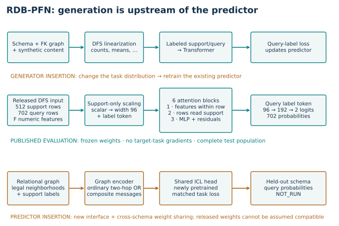
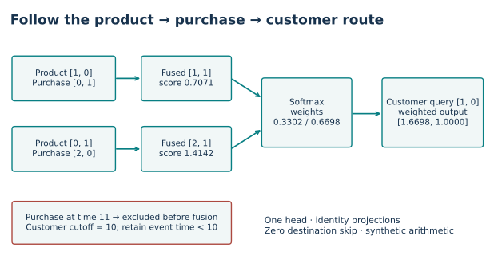
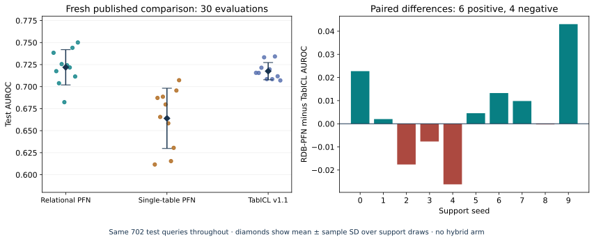
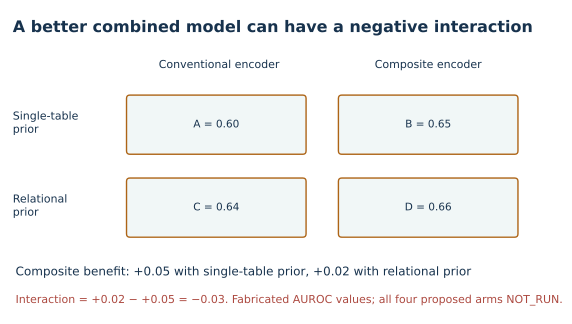

Year 5 · Research frontier · Lesson 182
RDB-PFN + composite message passing
Your win: turn “combine these two papers” into a precise intervention, a fair comparison, and a result that could prove your idea wrong. The core reading is one session; use a second for the notebook and written defense.
Observed: fresh complete selected reproduction: 30 evaluations, 21,060 predictions, all three means round to their published targets. New hybrid training NOT_RUN; whole-paper reproduction NOT_RUN. Learner PENDING_WRITTEN_DEFENSE.
Student notebook · Executed solution · Solution notebook · Quick reference · Full protocol.
See the idea · then trace the details
RDB-PFN: separate relational feature construction from inference
Synthetic relational structure enters through generated tasks and relational features.
1Generate linked records
Synthetic schema + foreign keys + table contents
Pretraining samples relational databases and prediction tasks. These generators determine which dependencies the learner practices.
2Construct relational features
Related records → DFS aggregates → feature table
Deep Feature Synthesis turns relational neighborhoods into tabular attributes such as counts and means. The released checkpoint receives this feature matrix, not raw graph edges.
3Predict from labeled support
Feature tokens + support labels → query logits
The transformer mixes features and support rows. Query labels remain hidden; a decoder reads the query label token. Evaluation uses fixed pretrained weights.
Pause and predict: Is the released checkpoint passing GNN messages along foreign keys during this forward pass?
No. Its input is the released feature matrix. Relational feature construction and transformer inference are separate stages.
Answer: No. Its input is the released feature matrix. Relational feature construction and transformer inference are separate stages.
1 · First name what will change¶
Lesson 181 turned a missing-cell prediction into a task contract: identify the row, hide unavailable answers, and score the complete population. Its GNN training stopped at a gradient-health prerequisite. That unfinished experiment stays unfinished here. We now ask a different question: what would make a combination of two existing methods worth testing?
Recall the two building blocks. A prior is a distribution of possible tasks. RDB-PFN trains on synthetic tables and relational databases sampled from such a distribution. At deployment, it receives labeled support examples and unlabeled queries. In-context learning, or ICL, predicts queries from that support while model weights remain fixed. RelGNN is a graph model that routes information through foreign-key relationships. Its composite message combines a source row and an intermediate row before the destination aggregates them. RDB-PFN §§4–5, RelGNN §4.
In plain terms. One paper changes what the model practices on. The other changes how relational information reaches a prediction. Those changes could complement each other, overlap, or conflict.
A hypothesis makes a prediction under specified conditions. “Relational prior plus composite routes will win” leaves too much unspecified. Which component changes? Which information is held fixed? What observation would make us abandon the idea?
2 · Model architecture: two insertion points, two experiments¶
The published RDB-PFN path¶
During pretraining, a generator samples a schema, foreign-key structure, and table contents. A schema states table types and their relationships. A foreign key identifies the parent row referenced by a child row. Deep Feature Synthesis (DFS) converts relational neighborhoods into tabular attributes using operations such as counts and means. A Transformer predicts hidden query labels from the other labeled rows. Training adjusts its weights using query-label loss. RDB-PFN §5 and Appendix C.
During the released evaluation, the relational database has already been converted to a feature matrix. For one support draw, concatenate 512 labeled support rows and 702 query rows. The numeric encoder projects each scalar feature into width 96. Six blocks alternate feature attention within a row and support-row attention for each feature. A label token carries support labels; a binary decoder produces two query logits, converted to probabilities. An MLP is a feed-forward network applied to a token; a residual adds its input back to its transformed output. A logit is an unnormalized prediction score. No query label or entity identifier enters this model. The labels enter only through support. The released base model has 692,738 parameters. Visible implementation, original model.
Shapes. Let F be the number of released DFS features. The input has shape 1 × 1,214 × F: one task, 1,214 rows, F columns. Feature tokens have shape 1 × 1,214 × F × 96; the label token adds one token per row. The decoder returns 1 × 702 × 2 logits. Chunking is disabled in practice because all 702 queries fit below the source chunk limit of 2,000.
Scope check. The paper appendix describes width 128; the released numeric checkpoints use width 96. We reproduce the released weights and code. Their source/data identity is pinned; historical experiment identity remains unestablished.


Generator-side proposal¶
Change the operator that creates synthetic relational contents or targets, while keeping DFS and the predictor architecture fixed. This changes the tasks sampled during pretraining. The released generator already has a configurable row-GNN path; “add a GNN” alone is not a distinct proposal. One must specify the changed message equation, how it changes label dependencies, and what existing generator behavior it replaces. Released generation code.
Predictor-side proposal¶
Keep synthetic training tasks fixed and replace the representation step with a graph encoder using composite messages. Follow that encoder with a shared support/query ICL head. This needs new training. The released RDB-PFN checkpoint learned a DFS feature interface; a new graph embedding with the same vector width does not automatically preserve its meaning.
An encoder must also work across schemas. RelGNN's source uses separate weights for atomic routes in a fixed schema. A cross-database model needs an explicit rule for sharing weights across unfamiliar table names and routes. Parameter sharing means deciding which computations use the same learned matrices. Matching dimensions alone does not solve that problem.
Scope check. Both hybrid paths are proposals. Neither is a published combination reproduced here. The full original RDB-PFN model and RelGNN operator are visible in the notebook; the fresh numerical reproduction below evaluates the existing RDB-PFN models.
3 · Trace one composite message¶
An atomic route connects a source and destination either directly or through an intermediate table with multiple foreign keys. Consider product → purchase → customer. Each purchase refers to one product and one customer. The purchase is the bridge; its quantity is meaningful together with the product it references. RelGNN §4.1–4.3.
Worked example. Two legal purchases produce source vectors [1, 0] and [0, 1]. Their bridge vectors are [0, 1] and [2, 0]. With identity projection matrices, fuse each source with its own bridge:
- First purchase: [1, 0] + [0, 1] = [1, 1].
- Second purchase: [0, 1] + [2, 0] = [2, 1].
The customer query is [1, 0]. A dot product measures how well each fused message aligns with it. Divide by √2 because each vector has two coordinates: the scores are 0.7071 and 1.4142. Softmax exponentiates scores and normalizes them to sum to one. The weights become 0.3302 and 0.6698. Their weighted sum is [1.6698, 1.0000].


For general vectors, fusion is z_j = W_source h_source(j) + W_bridge h_bridge(j). Here j indexes a bridge row and source(j) is its foreign-key parent. The W matrices are learned linear maps. Destination i receives sum_j alpha_ij V z_j; alpha is softmax of (Q h_i)·(K z_j)/sqrt(d) over legal messages to i. Q, K and V are query, key and value projections; d is the width of one head. A head is one separately parameterized attention calculation. RelGNN uses multiple heads plus output projection and destination skip; our transparent worked kernel uses one head, identity projections and zero skip.
Before fusion: resolve each foreign key and enforce the destination's cutoff. Our course experiment retains a dated event only when event_time < receiver_cutoff. Different receivers may have different cutoffs. Filtering by the latest cutoff in a batch could admit a future event for an earlier receiver. This policy connects the mechanism to Lesson 181's information contract.
Scope check. The one-head state matches the original RelGNN operator under the stated weights; its input derivatives also match finite differences. That validates this specialization, not an entire trained graph model or historical availability.
4 · Try to break the mechanism¶
Held fixed: query [1, 0], identity projections, route definition, cutoff 10. Changed: row order, an excluded future value, message multiplicity, or the route membership. Measured: the two output coordinates and attention weights. These interventions isolate different behaviors; none measures prediction accuracy.
Permuting the two legal rows leaves the output unchanged. Changing a future purchase dated 11 also leaves it unchanged because the row is filtered out first. Duplicating the first legal message changes the result to [1.5035, 1.0000]. Softmax is invariant to order, not to duplicating just one member. Adding another route's [8, 0] vector into the same normalization changes the result to [7.8670, 0.0210]. This deliberately violates route separation.
That last result is not proof that every ordinary GNN destroys useful information. Another message-passing architecture might preserve roles. The experiment explains why role mixing is worth controlling, rather than proving a universal expressive advantage.
5 · Establish the published result before proposing its extension¶
Our named target is RDB-PFN v5 Table 9, rel-f1/driver-dnf, context size 512. Three models use the same ten support draws and every one of the 702 test queries. We ran all 30 evaluations freshly, with fixed released checkpoints and all 32 TabICL ensemble estimators. An ensemble combines several model evaluations into one prediction. Source hashes, selected supports and complete (driverId, date) identities were checked before scoring. Frozen protocol, paper Table 9.
AUROC measures the fraction of positive/negative pairs in which the positive gets a higher predicted probability, giving half credit to ties. It ranges from zero to one; higher is better. We calculate it directly from pairs and independently with scikit-learn. The largest difference is below 1.12 × 10⁻¹⁶.
| Released model | Fresh mean AUROC ± sample SD | Paper target |
|---|---|---|
| RDBPFN | 0.721938 ± 0.019983 | 0.7219 |
| RDBPFN_single | 0.663990 ± 0.034177 | 0.6640 |
| TabICLv1.1 | 0.717568 ± 0.009770 | 0.7176 |
All three pass the predeclared descriptive mean-distance tolerance 0.02. This tolerance is not a statistical equivalence test.


The mean difference between relational and single-table RDB-PFN is +0.05795 AUROC, positive for all ten support draws. These checkpoints share the released predictor architecture. They differ in training history, so the result does not isolate a new message operator. The RDB-PFN–TabICL difference is much smaller: +0.00437, positive in six of ten draws and negative in four. TabICL is a separate model family, not the “composite” arm of a controlled experiment.
What the uncertainty means. Sample standard deviation describes variation when choosing different support rows for this same task. Ten draws share the same test set. They are not ten independent databases, and a fresh rerun of L166 is not a new data replication. Every fresh probability here exactly matches the corresponding L166 probability; that is observed repeatability in this environment.
Scope check. The release labels are the complement of the current raw DNF definition. Preserve that convention to reproduce the table; complement both labels and probabilities to interpret current DNF risk. Full raw DFS regeneration and historical feature availability remain unestablished. Reproducing numerical scores does not certify deployability or whole-paper parity.
6 · A hypothesis that can lose¶
Candidate hypothesis: under a fixed synthetic-task and labeled-support budget, a relational prior benefits more from a composite graph encoder than from conventional two-hop message passing, especially on held-out bridge-heavy schemas.
A held-out schema has a table/relationship structure excluded from model selection. “Bridge-heavy” must be defined before seeing results—for example, a specified fraction of query-relevant dependencies passing through tables with multiple foreign keys. Cross-schema weight sharing must be fixed first. Otherwise a gain could come from extra schema-specific parameters.
The proposed predictor experiment has four arms. Every arm uses the same ICL head and task loss. The prior changes the training-task distribution; the encoder changes the message rule. All four models need fresh training. Pair generator seeds, task counts, support draws and evaluation queries where meaningful, and disclose parameter and measured-compute differences. Include a second comparison at matched compute if composite and conventional encoders have different costs.
| Arm | Synthetic training prior | Encoder before the shared ICL head |
|---|---|---|
| A | Single-table prior | Conventional two-hop graph encoder |
| B | Single-table prior | Composite graph encoder |
| C | Relational prior | Conventional two-hop graph encoder |
| D | Relational prior | Composite graph encoder |
In the single-table prior arms, there are no inter-table edges during pretraining; the same input interface must handle this degenerate graph. That creates a transfer challenge by design. Record which relational parameters receive training signal, rather than pretending every parameter was equally exercised. A route-preserving relational-prior control would be an additional experiment, not a hidden replacement for these arms.


Interaction asks whether one change alters the benefit of another. For each paired seed, compute (D − C) − (B − A). A positive value supports complementarity on that measurement. D beating A alone is insufficient.
Worked example—fabricated numbers. A = 0.60, B = 0.65, C = 0.64, D = 0.66. The combined model D is best, yet its interaction is (0.66−0.64)−(0.65−0.60) = −0.03. Composite messages helped less with the relational prior in this illustration. These are arithmetic examples, not trained results.
Falsification test 1: no complementary effect. Predeclare a minimum useful interaction and evaluate it on untouched tasks across at least three databases. If uncertainty remains too large to distinguish it, call the result inconclusive. If the upper uncertainty bound falls below that threshold, the proposed useful complementarity is unsupported. Compute task-level paired contrasts; do not treat all query rows or support seeds as independent database samples.
Falsification test 2: the fair control closes the gap. Give the conventional model the same legal neighborhood, effective receptive field, supervision and tuning allowance. If its performance matches the composite model within a predeclared practical margin at comparable compute, withdraw the claim that composite routing is responsible. Log whether differences come from missing data, parameter count, training stability or exposure to additional labels.
Generator-side changes would need a separate contrast with the predictor fixed. Testing both insertion points at once would make any result hard to attribute.
7 · Implement, inspect, defend¶
The notebook has three live tasks: fuse only legal route rows, score the complete key set, and compute paired factorial interactions. Your functions feed the mechanism experiment and the full 30-run rescore. Wrong implementations are rejected. The original model, checkpoint evaluator and composite source appear inline for inspection; a separate opt-in runs fresh checkpoint inference.
EXIT: name your insertion point, what stays fixed, what must be retrained, what the published evidence establishes, and the two results that would make you abandon the proposal. Ask the teaching agent follow-up questions about any unclear step; paste your defense for review. Passing code alone does not award mastery.
Primary reading: RDB-PFN §5.2 and Appendix C.2, then RelGNN §4.2–4.3. Trace the point at which the source architecture sees a flattened feature matrix versus foreign-key edges. Next, Lesson 183 investigates Graph-Transformers and pretraining; keep the same intervention-and-control discipline.
Scope check. Selected released-checkpoint reproduction COMPLETE; new hybrid training and whole-paper reproduction NOT_RUN. L180's practical exit and L181's stopped GNN experiment remain unchanged. Live Colab and deployment are separate checks.
Next: Lesson 183. Keep the four-arm comparison, but change the question: does prior training help one backbone more than another? A promising composite route does not answer that initialization question.